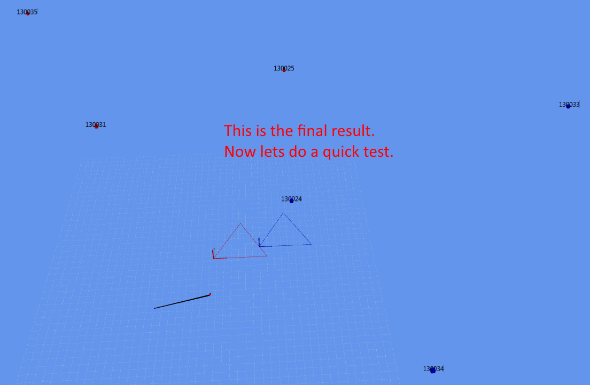

This document contains an overview of how to get started with the GamesOnTrack SDK. This document is intended for developers.
For both developers and end-users:
The GOTSDKSample project requires Visual Studio 2010 or newer (The free express version is good enough).
The purpose of the SDK is to allow other developers to create applications using the GOT position system. The SDK is just a normal .NET class library, without any special dependencies. The library is used by the following produkct: GTCommand (by GamesOnTrack A/S) and Faller Car System Digital (by Faller GmbH).
The SDK library contains two overall parts: Master and Position
Functionality for connecting to GOT Master. Essentially a class which manages the USB connection and raises events when new units are connected, measurements received and so on.
The raw data "output" from Master is pure distances in millimeters between transmitters and receivers. In order to get a more applicable (X,Y,Z) coordinate for a measurement, the distances need to go through a process called Trilateration.
In case you need more than one Scenario in your application, you need to "merge" them. The challenge is that all scenarios contain their own coordinate (local) system and we only want a single (global) coordinate system.
Our merge concept is basically about promoting one scenario to be the "main" scenario. This coordinate system of this scenario will now be origo of the global coordinate system. For each other scenario we need the offset between its coordinate system and the main scenario.
This is done by setting a number of properties on a Scenario instance. See further below. After that PositionCalculator.TryCalculatePositionFromMergedScenarios(...) will handle the rest.
The scenario class has the following relevant properties:
// The offset vector. Often it is only necessary to set this.
Vector3D ScenarioTranslation { get; set; }
// The axis to rotate around. Only used in case the scenarios are not on a horizontal/level plane.
Vector3D ScenarioRotationAxis { get; set; }
// The angle in degrees to rotate around 'ScenarioRotationAxis'. This is only required if the scenarios are not parallel.
double ScenarioRotationAngle { get; set; }
// Whether the scenario is a main scenario. Remark: Only one scenario should have this property set to true!
bool IsMainScenario { get; set; }
And the following methods:
// Get the full transform matrix, calculated from ScenarioTranslation, ScenarioRotationAxis and ScenarioRotationAngle.
Matrix3D GetTransformMatrix();
// Same as above, just inverted.
Matrix3D GetInverseTransformMatrix();
// Helper method for setting IsMainScenario = true and resetting all the transform properties
void SetToMainScenario();
This rotation axis can be seen here:


